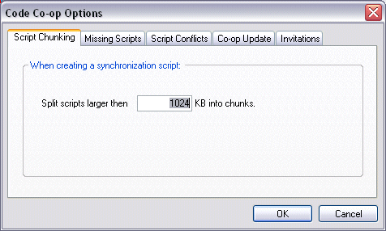
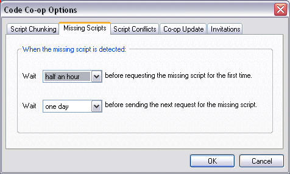
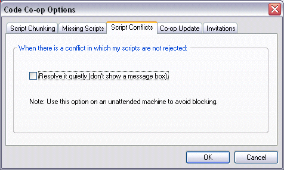
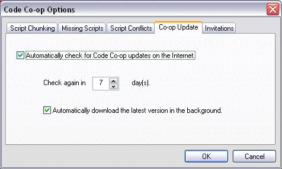
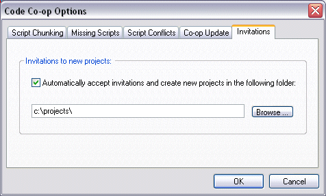

The Program Options property sheet enables you to make global selections including script handling, Code Co-op update settings and Project Invitation handling.
Under the "Script Chunking" tab, you can select how Code Co-op breaks large scripts into chunks for transport. Scripts bigger than the threshold size will be broken into chunks. Each script chunk is mailed in a separate e-mail message.

To change script threshold size, select Program > Options and the "Script Chunking" tab, where you can set the new script threshold size.
Note: In Code Co-op Pro, chunking threshold can be changed on the Hub (or e-mail peer). The change is automatically propagated to all Satellites.
In the "Missing Scripts" tab, you can select how Code Co-op requests missing script(s). You can set how long Code Co-op has to wait before requesting the missing script for the first time, and how frequently requests are repeated.

To change missing script(s) processing, select Program > Options and the 'Missing Scripts' tab where using the drop down controls, the select appropriate initial delay and repeat interval.
Note: If you set the delay too short, Code Co-op might start sending re-send requests despite the fact that your email program is still downloading scripts (including the ones being requested).
After the first re-send request is sent, Code Co-op will wait for the specified time, and, if the script hasn't arrived, will repeat the re-send request (to a different project member).
On an unattended Code Co-op machine you might want to turn off message boxes informing about script conflicts that don't involve the current user. These situations don't require any user action (except to click OK, which might be a problem on an unattended machine).

In the "Code Co-op Update" tab, you can select how the program checks for Code Co-op announcements and updates on the internet. Specify how frequently Co-op should check for newer versions. You can also request to automatically download the newest versions onto your local disk in the background (recommended).

To change Code Co-op update handling, select Program > Options and the 'Code Co-op Update' tab where you can turn on/off automatic checks for the newest version and set the update check interval and the background download of the newest version.
In the "Invitations" tab, you can select how the program handles project invitations sent to your machine. When you check the "Automatically accept invitations ..." box, in response to each invitation Code Co-op will create a new sub-folder (named after the project) in the selected folder and create the project there.

To change Code Co-op project invitation handling, select Program > Options and the 'Invitations' tab where you can turn on/off automatic accepting of project invitations and select where a new project should be stored.